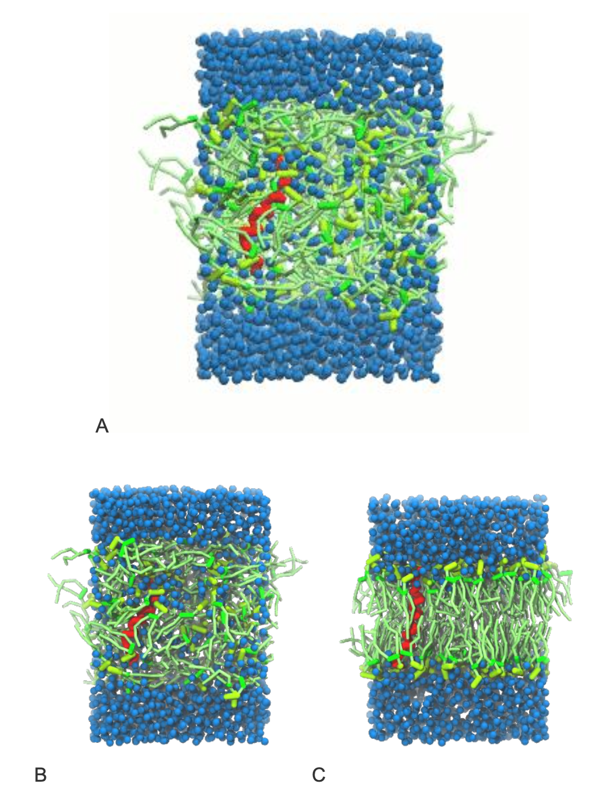
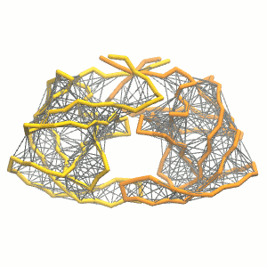
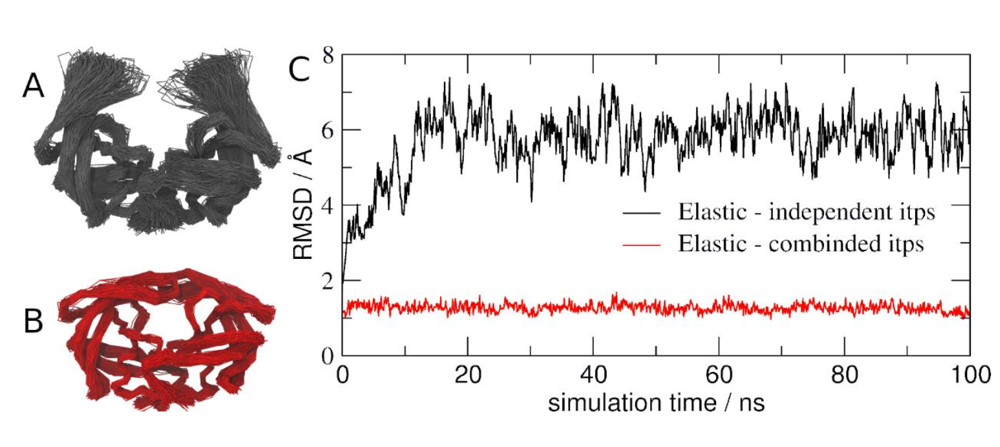

Proteins - Part II: TM proteins and Protein complexes
In case of issues, please contact paulo.telles-de-souza@ibcp.fr.
Summary
Introduction
In this last module of the Proteins tutorial, we will increase the complexity of our system by embedding the protein in a lipid bilayer (please take a look in the lipid tutorials, part I and part II,). We propose here to have a look at the processes of tilt and dimerization of KALP peptides [1,2] embedded in a POPC membrane. Eukaryotic plasma membranes (PM) are often approximated as a pure POPC bilayer (being the most common PM phospholipid) or a pure DOPC bilayer (were average bilayer properties can be closer to those of a PM, although DOPC itself is not prevalent in eukaryotic cells) [3].
The coarse-grained structure and topology of KALP can be simply generate by using martinize2.
martinize2 -ff martini3001 -f kalp-AA.pdb -x kalp.pdb -p backbone -o system.top -scfix -ss Output:
CCHHHHHHHHHHHHHHHHHHHCCIn simulations involving peptides, an important step is to well define the secondary structure. As they can be very flexible, is important to be sure of your assumptions. For transmembrane (TM) peptides like KALP with 20-30 residues as chain length (23 residues the example used in this tutorial), it is expected that the charged terminals would be more disordered, while the hydrophobic TM section should be helical. For other TM peptides, maybe we useful to add longer terminals and/or cap the terminals, depending of the specific systems being studied. Elastic networks [4] or Gō models [5] are not necessary in this case as the bonded parameters should be enough to keep the structure stable. However, side chain corrections [6] can be important. Given that Martini 3 protein models [7] avoid excessive overmapping (an approximation used in Martini 2 Protein models) [1,8], residues as leucine and lysines use S-beads to represent their side chains. Without steric effects, additional dihedrals maybe necessary to keep the proper orientation of the side chains.
Proteins in membrane environment
After getting the CG structure and topology of KALP, we can start by solvating the protein directly with the membrane environment so that it ends up inserted. Different ways to perform this step are possible. This tutorial presents two approaches, which are shown in the following sections:
Self-assembly approach
A bilayer self-assembly dynamics, as presented in the first module of the lipid tutorial part I, will result in the self-insertion of the KALP inside the bilayer (Fig. 1). The files required for this tutorial (including worked files) can be downloaded from here.
- The first steps are to generate a simulations box containing KALP, POPC, water and ions. This can be done by the following commands:
gmx editconf -f kalp.pdb -o kalp.gro -d 1.5gmx insert-molecules -f kalp.gro -ci popc.gro -nmol 156 -box 7 7 6 -try 500 -o system_no-solvent.grogmx editconf -f system_no-solvent.gro -o system_no-solvent.gro -c -box 7 7 10gmx solvate -cp system_no-solvent.gro -cs water.gro -o system_solvated.gro -radius 0.21
- In addition, the
.topfile should be adapted, adding the Martini 3.itpfiles:
sed -i -e 's/martini\.itp/martini_v3.0.0.itp/' system.topNLIPIDS=$(($(grep -c POPC system_solvated.gro)/12))NWATERS=$(grep -c W system_solvated.gro)echo -e "\nPOPC $NLIPIDS \nW $NWATERS" >> system.topYou should also replace 4 water beads by CL ions in the .top file, as the systems needs to be neutralized. In addition, do not forget to add the missing .itp files in the .top file.
- Now, run the minimization, equilibration and production simulations. Do not forget to create a
restraint.grobased on the initial configuration.
gmx grompp -f minimization.mdp -c system_solvated.gro -p system.top -o minimization.tpr gmx mdrun -deffnm minimization -vgmx grompp -f equilibration.mdp -c minimization.gro -p system.top -o equilibration.tpr -n index.ndxgmx mdrun -deffnm equilibration -vgmx grompp -f dynamic.mdp -c equilibration.gro -p system.top -o dynamic.tpr -n index.ndxgmx mdrun -deffnm dynamic -vInsane approach
This second method, being the easiest and the most straightforward, is the recommended one to build such systems. Here is the procedure:
- The syntax of the
insane.py[9] script is very similar to what was used so far; it can be invoked by runninginsane.py -h. (Get the latest from the Downloads page.) Let’s see a practical example:
python2 insane.py -f kalp.gro -o system.gro -p system.top -pbc square -box 7,7,9 -l POPC -u POPC -center -sol W -salt 0.01The previous command line will set up a complete system, containing a squared POPC bilayer of \(7×7 nm^2\), with the KALP peptide inserted and centered in this bilayer. The whole system will be solvated in standard coarse-grained water. A small concentration of NaCl was added only to neuralize the +4 charge of KALP. More on the insane.py tool can be found in separate tutorials, notably setting up a complex bilayer (lipid tutorial part II).
Proceed as before and start a production run. To remind you, this involves (A) editing the
system.topfile to reflect the version of Martini you want to use and providing include statements for the topology files; (B) downloading or copying definitions of Martini 3.itpfiles, includingmartini_v3.0.0_phospholipids_v1.itp; (C) using the correct names of the molecules involved; (D) downloading or copying set-up.mdpfiles for minimization, equilibration, and production runs (you can also find them in the template folder of this module zip file) and if necessary, editing them (bilayer simulations are best done using semi-isotropic pressure coupling and you may want to separately couple different groups to the thermostat(s)); (E) running the minimization and equilibration runs.Generate a new system in which membrane thickness is reduced (different the lipid type, DLPC for instance). Observe how the thickness is affecting the tilt of the transmembrane helix; compare it to the previous simulation.
Double these previous boxes in one dimension (
gmx genconf) and rerun the simulations. Observe the different dimerization conformations (parallel or anti-parallel tilts). Note that more than one simulation (or a longer one) might be required to observe both cases!Choose your favorite orientation and backmap the final conformation (tutorial on backmapping available here). Simulate this system atomistically to refine and have a closer and detailed look at the interactions between KALPs.
Protein complexes
The aim of this second module is to see how application of elastic networks can be combined with the Martini model to conserve quaternary structures more faithfully without sacrificing realistic dynamics of a protein. As example, we will use HIV-1 protease, which is an essential enzyme for viral particle maturation and is a target in the fight against HIV-1 infection worldwide [10-12]. You should be aware that the HIV-1 protease structure used in this tutorial (pdb code 1A8G) includes a ligand. For now, this ligand is not known as a building block to martinize2 and need to be removed from the .pdb, which can be done using the command:
grep "^ATOM" 1A8G.pdb > 1A8G_clean.pdbIf you want to study this or other ligand binding, you will need to build a Martini topology for the ligand yourself and then add to your simulation box, together with your protein CG model. We suggest you to take a look at tutorials Parametrizing a new small molecule and Protein - small molecule binding in case you want to go in this direction.
Another point to be aware is that the protein is a dimer. By default, you will get a topology file with the two subunits being treated as individual molecules in martinize2. Overall, Martini 3 can deal well which such structures, however you may have potential packing problems, which can make Martini 3 models to form complexes not so stable. These problems are usually related with backbone (BB) bead interactions between different proteins in the complex. As the bead size for the BB beads is actually too big to well represent the BB-BB distances, you can create a packing problem that pushes the proteins apart, reducing their interactions. In these cases, you may need to consider using Elastic networks [4] or Gō models [5] between the chains. But first, let’s evaluate if this is the case in the HIV-1 protease dimer.
Protein complexes with independent .itps for each monomer
- Repeat steps 1 to 7 from the Protein Tutorial Part-I with the HIV-1 protease (
1A8G_clean.pdb). Another option is to use this quicker route:
- Martinize the complex:
martinize2 -f 1A8G_clean.pdb -o hivProtease_only.top -x hivProtease_cg.pdb -dssp /path/to/dssp -p backbone -ff martini3001 -elastic -ef 700.0 -el 0.5 -eu 0.9 -ea 0 -ep 0 -scfix -cys auto- build a simulation box with your protein in water solution with 0.15 M of NaCL, using insane code:
python insane.py -f 1A8G-CG.pdb -o system.gro -p system.top -pbc square -box 10,10,10 -center -sol WUpdate the system.top file of your system and then run a minimization, equilibration and production simulations. Given the size of the system, you may need to use less CPU/threads in the MD steps.
gmx grompp -p system.top -c system.gro -f minimization.mdp -o minimization.tpr -maxwarn 1 gmx mdrun -deffnm minimization -vgmx grompp -p system.top -c minimization.gro -f equilibration.mdp -o equilibration.tprgmx mdrun -deffnm equilibration -v gmx grompp -p system.top -c equilibration.gro -f dynamic.mdp -o dynamic.tpr -maxwarn 1gmx mdrun -deffnm dynamic -v - Visualize the simulation, look especially at the binding pocket of the protein: does it stay closed, open up? Is the protein complex stable? What happens to the overall structure? You can take a lool the elastic network in Figure 2.

Protein complexes with merge option
In case you gave doubts that the dynamics of your protein complex is not good enough, an option to help to preserve higher-order structure of complex is to add an elastic network between the chains.
- For that, you can use the
mergeflag ofmartinize2
martinize2 -f 1A8G_clean.pdb -o hivProtease_only.top -x hivProtease_cg.pdb -dssp /path/to/dssp -p backbone -ff martini3001 -elastic -ef 700.0 -el 0.5 -eu 0.9 -ea 0 -ep 0 -scfix -cys auto -merge A,B- Proceed as before, creating a new box with
insane, which can be followed by a minimization and an equilibration step. You may need extra supplementary relaxation steps as you added extra additional constraints in the structure when you merged the.itpfiles.
It is worth mention that martinize2 allows you to easily manipulate the elastic network. In addition to the options related to cutoff and force constant, you can also change some other definition of the elastic model. For instance, the extra elastic bonds do not need to be used only in BB beads. Other beads of your system can be used defining them in the flag -eb RB_SELECTION. This feature will be useful in the future to generate stiff Martini 2 models of DNA [13] and RNA [14]. Another important option is to redefine which part of your system will get elastic network or not. This can be done with the flag –eunit.
Comparison between models
With two simulations of the same protein complex using different approaches for elastic network, you can now compare the trajectories with different Martini protein models. If you do not want to wait, some pre-run trajectories can be found in the tutorial folder. As in Protein tutorial part I RMSD and RMSF can be calculated using GROMACS tools (gmx rms and gmx rmsf) [15] while VMD [16] or Pymol can be used to visualize the trajectories.
Based on the results of Figure 3, try now figure out which approach is the best in this case. One aspect to consider is that we used a HIV-1 Protease conformation from a structure with a ligand (holo state) but the simulations was performed without the ligand (apo state). What the literature indicate about previous NMR, crystallography and MD simulations studies with apo states of this enzyme?

.itp file). (C) RMSD of HIV-1 Protease with two different approaches described previously: elastic networks only in each monomer (black) and elastic networks also between the monomers (red).Tools and scripts used in this tutorial
GROMACS(http://www.gromacs.org/)martinize2(https://github.com/marrink-lab/vermouth-martinize)insane(downloadable here)
References
[1] Monticelli, L.; Kandasamy, S. K.; Periole, X.; Larson, R. G.; Tieleman, D. P.; Marrink, S.-J. The MARTINI Coarse-Grained Force Field: Extension to Proteins. J. Chem. Theory Comput. 2008, 4 (5), 819–834. https://doi.org/10.1021/ct700324x.
[2] Ramadurai, S.; Holt, A.; Schäfer, L. V.; Krasnikov, V. V.; Rijkers, D. T. S.; Marrink, S. J.; Killian, J. A.; Poolman, B. Influence of Hydrophobic Mismatch and Amino Acid Composition on the Lateral Diffusion of Transmembrane Peptides. Biophys. J. 2010, 99 (5), 1447–1454. https://doi.org/10.1016/J.BPJ.2010.05.042.
[3] Marrink, S. J.; Corradi, V.; Souza, P. C. T.; Ingólfsson, H. I.; Tieleman, D. P.; Sansom, M. S. P. Computational Modeling of Realistic Cell Membranes. Chem. Rev. 2019, 119 (9), 6184–6226. https://doi.org/10.1021/acs.chemrev.8b00460.
[4] Periole, X.; Cavalli, M.; Marrink, S.-J.; Ceruso, M. A. Combining an Elastic Network With a Coarse-Grained Molecular Force Field: Structure, Dynamics, and Intermolecular Recognition. J. Chem. Theory Comput. 2009, 5 (9), 2531–2543. https://doi.org/10.1021/ct9002114.
[5] Poma, A. B.; Cieplak, M.; Theodorakis, P. E. Combining the MARTINI and Structure-Based Coarse-Grained Approaches for the Molecular Dynamics Studies of Conformational Transitions in Proteins. J. Chem. Theory Comput. 2017, 13 (3), 1366–1374. https://doi.org/10.1021/acs.jctc.6b00986.
[6] Herzog, F. A.; Braun, L.; Schoen, I.; Vogel, V. Improved Side Chain Dynamics in MARTINI Simulations of Protein–Lipid Interfaces. J. Chem. Theory Comput. 2016, 12 (5), 2446–2458. https://doi.org/10.1021/acs.jctc.6b00122.
[7] Souza, P. C. T.; Alessandri, R.; Barnoud, J.; Thallmair, S.; Faustino, I.; Grünewald, F.; Patmanidis, I.; Abdizadeh, H.; Bruininks, B. M. H.; Wassenaar, T. A.; et al. Martini 3: A General Purpose Force Field for Coarse-Grained Molecular Dynamics. Nat. Methods 2021, 18 (4), 382–388. https://doi.org/10.1038/s41592-021-01098-3.
[8] de Jong, D. H.; Singh, G.; Bennett, W. F. D.; Arnarez, C.; Wassenaar, T. A.; Schäfer, L. V; Periole, X.; Tieleman, D. P.; Marrink, S. J. Improved Parameters for the Martini Coarse-Grained Protein Force Field. J. Chem. Theory Comput. 2013, 9 (1), 687–697. https://doi.org/10.1021/ct300646g.
[9] Wassenaar, T. A.; Ingólfsson, H. I.; Böckmann, R. A.; Tieleman, D. P.; Marrink, S. J. Computational Lipidomics with Insane : A Versatile Tool for Generating Custom Membranes for Molecular Simulations. J. Chem. Theory Comput. 2015, 11 (5), 2144–2155. https://doi.org/10.1021/acs.jctc.5b00209.
[10] Nicholson, L. K.; Yamazaki, T.; Torchia, D. A.; Grzesiek, S.; Bax, A.; Stahl, S. J.; Kaufman, J. D.; Wingfield, P. T.; Lam, P. Y. .; Jadhav, P. K.; et al. Flexibility and Function in HIV-1 Protease. Nat. Struct. Biol. 1995 24 1995, 2 (4), 274–280. https://doi.org/10.1038/nsb0495-274.
[11] Pomerantz, R. J.; Horn, D. L. Twenty Years of Therapy for HIV-1 Infection. Nat. Med. 2003 97 2003, 9 (7), 867–873. https://doi.org/10.1038/nm0703-867.
[12] Torbeev, V. Y.; Raghuraman, H.; Hamelberg, D.; Tonelli, M.; Westler, W. M.; Perozo, E.; Kent, S. B. H. Protein Conformational Dynamics in the Mechanism of HIV-1 Protease Catalysis. Proc. Natl. Acad. Sci. 2011, 108 (52), 20982–20987. https://doi.org/10.1073/PNAS.1111202108.
[13] Uusitalo, J. J.; Ingólfsson, H. I.; Akhshi, P.; Tieleman, D. P.; Marrink, S. J. Martini Coarse-Grained Force Field: Extension to DNA. J. Chem. Theory Comput. 2015, 11 (8), 3932–3945. https://doi.org/10.1021/acs.jctc.5b00286.
[14] Uusitalo, J. J.; Ingólfsson, H. I.; Marrink, S. J.; Faustino, I. Martini Coarse-Grained Force Field: Extension to RNA. Biophys. J. 2017, 113 (2), 246–256. https://doi.org/10.1016/J.BPJ.2017.05.043.
[15] Abraham, M. J.; Murtola, T.; Schulz, R.; Páll, S.; Smith, J. C.; Hess, B.; Lindah, E. Gromacs: High Performance Molecular Simulations through Multi-Level Parallelism from Laptops to Supercomputers. SoftwareX 2015, 1–2, 19–25. https://doi.org/10.1016/j.softx.2015.06.001.
[16] Humphrey, W., Dalke, A. and Schulten, K. VMD - Visual Molecular Dynamics. J. Molec. Graph. 1996, 14, 33–38.